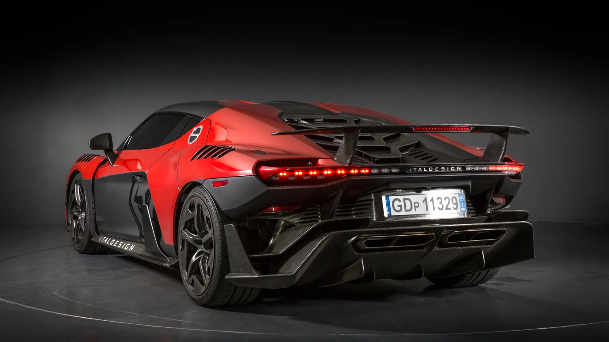

A 2017-ben, a 87. Genfi Nemzetközi Autószalonon bemutatott Zerouno az első autó, amely az új Italdesign Automobili Speciali márkanév alatt született.
A gyűjtőknek és a látnoki rajongóknak szánták, mindössze öt egységből épül fel. A Zeoruno egyesíti a versenyautó jellemzőit és teljesítményét a normál utakon való használat típusjóváhagyásával. A szénszálas és alumínium moduláris alváz köré fejlesztett különleges autó erőteljes, 5,2 literes V10-es szívómotorral büszkélkedhet, amely mindössze 3,2 másodperc alatt teszi lehetővé a 0-100 km/órás gyorsulást és a 330 km/órás végsebességet. A karosszéria teljes egészében szénszálas. Az autó hossza 4847 milliméter, szélessége 1970 milliméter, magassága 1204 milliméter.
"Könnyű". Ez volt a kezdő koncepció, amelyet a tervezők és mérnökök megvalósítottak a Zerouno projekthez. A Styling Center és a Engineering Development Department már az első stílustervtől kezdve megvalósította az úgynevezett szimultán mérnöki munkamódszert, amelyet az Italdesign fejlesztett ki és tökéletesített az 1960-as évek végén, és folyamatosan fejlesztett a vállalat közel ötvenéves története során.
A tervezők és mérnökök egyidejűleg dolgoznak a stílusmegoldások és a funkcionális megvalósíthatósági ellenőrzések végrehajtásán, amíg el nem érik az ideális kompromisszumot, amely megfelel a tervezési és teljesítménykövetelményeknek egyaránt. A funkcionális tervezés mindig is megkülönböztette a Moncalieriben elindított és kifejlesztett projekteket: az Italdesignnál nincs olyan stílusjavaslat, amely egyidejűleg ne ölelne fel egy műszaki megoldást.
